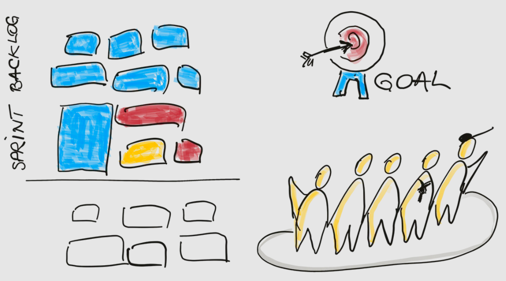
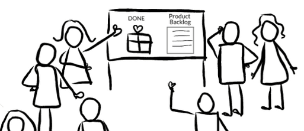
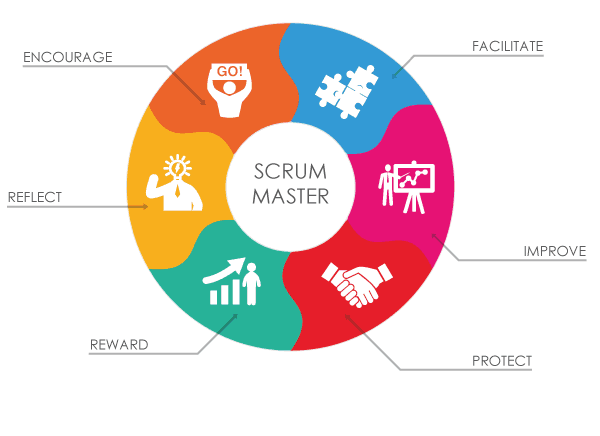

Scrum in 10 minutes
Proposal
-
Hystory of scrum
-
Problems of project management
-
What scrum is
-
5 scrum events
-
3 roles of scrum
-
3 scrum artifacts
-
Advantages of using SCRUM
-
References
Introduction to scrum

Similarities between Rugby Scrum and the Agile Scrum Methodology
- Using a team approach
- Each player has specific roles
- Sprints are important
- Flexibility is a must
- Core values
Co-creators of scrum
Jeff Sutherland
Ken Schwaber
Problems
-
Changing requirements, users needs, goals
-
Changing world, situations change, covid-19 ...
-
Uncertaincy
-
Incomplete Requirements & Specifications
-
Products were often developed over costs, over time:
"Only 16.2% of IT projects were deemed successful by being completed on time and budget, with all the promised functionality. A majority of projects, or 52.7%, were over cost, over time, and/or lacking promised functionality. A majority of projects, or 52.7% , were over cost, over time, and/or lacking promised functionality (according Standish report, 2019)
Scrum events
Sprint Planning
Daily scrum meeting
< 15 minutes
Sprint review
Sprint retrospective
Think POSITIVELY about improvement
Three roles of scrum
Three roles of scrum
Product Owner
Development team
3-9
Scrum master
Scrum artifacts
Scrum artifacts
1. Product backlog
2. Sprint backlog
3. Increment
Conclusion
Advantages
Scrum
-
helps to adapt to changing environments
-
reduces risks and costs of development
-
provides with fast feedback from the client, users
-
increases speed to market
-
gives the sense of regular progress
-
increases employees engagement and satisfaction (perfect motivation)